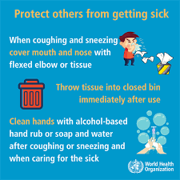
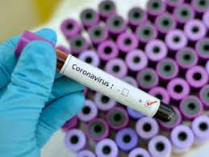
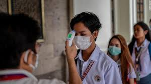

SYMPTOMS:
Doctors are learning new things about
this virus every day. So far,
we know that COVID-19 may not initially
cause any symptoms for some people.
You may carry the virus for 2 days or up to
2 weeksTrusted Source before you notice
symptoms.
Some common symptoms that have been
specifically linked to COVID-19 include:
->shortness of breath
->having a cough that gets more severe over time
->a low-grade fever that gradually
increases in temperature
These symptoms may become more severe
in some people.
Call emergency medical services
if you or someone you care for
have any of the following symptoms:
trouble breathing
->blue lips or face
->persistent pain or pressure in the chest
->confusion
->excessive drowsiness

PRECAUTIONS:
-->Avoid close contact with people
who are sick. Maintain at least
three feet distance between yourself
and anyone who is coughing or sneezing.
-->Avoid touching your eyes, nose, and mouth.
-->Stay home when you are sick.
-->Cover your cough or sneeze with a tissue,
then dispose of the tissue safely.
-->Clean and disinfect frequently-touched
objects and surfaces using
a regular household
cleaning spray or wipe.
-->Wearing a mask is not necessary
unless you are taking care
of an infected person.
The Centers for Disease Control (CDC) does
recommend that only infected
people wear masks to prevent the
spread of the virus.
-->Wash your hands often with soap and water
for at least 20 seconds,
especially after going to the bathroom,
before eating, and after
blowing
your nose, coughing, or sneezing.
-->If soap and water are not readily available,
use an alcohol-based
hand sanitiser with at least 60% alcohol.
Always wash hands with soap and
water when hands are visibly dirty.
-->If you have a fever, cough
and difficulty breathing,
seek medical attention immediately.
-->Keep in mind the travel advisory set out
by the Ministry of Health and Welfare.

MEDICATION:
Chloroquine to be tested for coronavirus treatment in the US
The President of the United States, Donald Trump, announced on 19 March
that chloroquine (hydroxychloroquine/Plaquenil), a drug used to treat
malaria and arthritis, was approved by the US Food and Drug Administration
(FDA) to be tested as a treatment for COVID-19. Chloroquine is being tested
in various clinical trials conducted by government agencies and academic institutions.
Other antivirals drugs are also planned to be fast-tracked for testing for coronavirus.
Favilavir, the first approved coronavirus drug in China
The National Medical Products Administration of China has approved the use of
Favilavir, an anti-viral drug, as a treatment for coronavirus.
The drug has reportedly shown efficacy in treating the disease with
minimal side effects in a clinical trial involving 70 patients.
The clinical trial is being conducted in Shenzhen, Guangdong province.

Coronavirus vaccine by Medicago
Medicago is developing drug candidates against COVID-19
after having produced Virus-Like Particles
(VLP) of the coronavirus. The company has formed
a collaboration with Laval University’s
Infectious Disease Research Centre to develop
antibodies against SARS-CoV-2.v
The company’s research activities are being partly
funded by the Canadian Institutes
for Health Research(CIHR).
AT-100 by Airway Therapeutics
Airway Therapeutics is exploring its novel human
recombinant protein named AT-100 (rhSP-D) as a
treatment for coronavirus. The company has announced
a filing with the Respiratory Diseases
Branch of the National Institutes of Health to evaluate the drug.
AT-100
has shown efficacy in preclinical studies in
reducing inflammation and infection in the lungs,
while also generating an immune response against
various respiratory diseases.
TZLS-501 by Tiziana Life Sciences
Tiziana Life Sciences is developing its monoclonal
antibody named TZLS-501 for the treatment of COVID-19.
TZLS-501 is a human anti-interleukin-6 receptor (IL-6R),
which helps in preventing lung damage and elevated
levels of IL-6.
The drug works by binding to IL-6R and depleting the amount
of IL-6 circulating in the body thereby reducing
chronic lung inflammation.

OYA1 by OyaGen
OyaGen’s OYA1 has shown strong antiviral efficacy
against coronavirus in laboratory essays.
It was found to be more effective than chlorpromazine
HCl in inhibiting SARS-CoV-2 from replicating
in cell culture.
OYA1 was earlier approved as an investigational new drug
for treating cancer but abandoned due to lack of efficacy.
OyaGen plans to conduct further research on the drug to
determine the efficacy in treating coronavirus.
BPI-002 by BeyondSpring
BeyondSpring’s BPI-002 is a small molecule agent indicated
for treating various infections including COVID-19.
It has the ability to activate CD4+ helper T cells and CD8+
cytotoxic T cells and generating an immune response in the body.
If combined with another COVID-19 vaccine, the drug has
the ability to generate long-term protection against
viral infections. BeyondSpring has filed US patent
protection for the drug for treating viral infections.
Altimmune’s intranasal coronavirus vaccine
An intranasal Covid-19 vaccine is being developed by
US-based clinical-stage biopharmaceutical company, Altimmune.
Design and synthesis of the single-dose vaccine have
been completed, while animal testing will follow.
The coronavirus vaccine is being developed based on a
vaccine technology platform that is similar to NasoVAX,
an influenza vaccine developed by Altimmune.
INO-4800 by Inovio Pharmaceuticals and
Beijing Advaccine Biotechnology
Inovio Pharmaceuticals has collaborated with
Beijing Advaccine Biotechnology Company to advance the development
of the former’s vaccine, INO-4800, as a novel coronavirus vaccine.
The company has started pre-clinical testing
for clinical product manufacturing.
